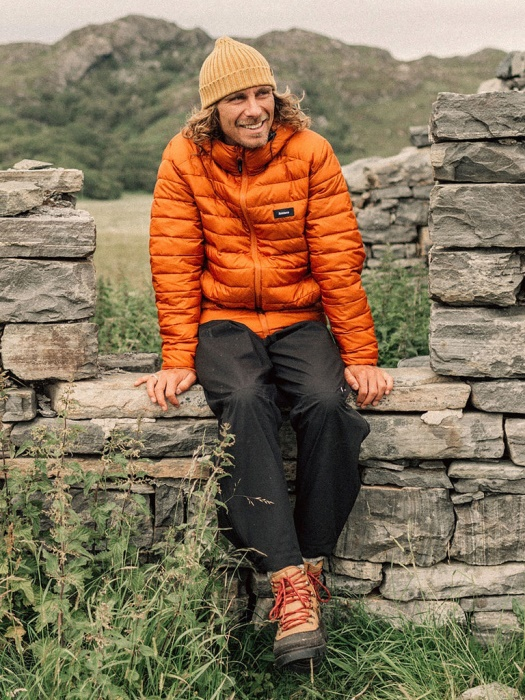
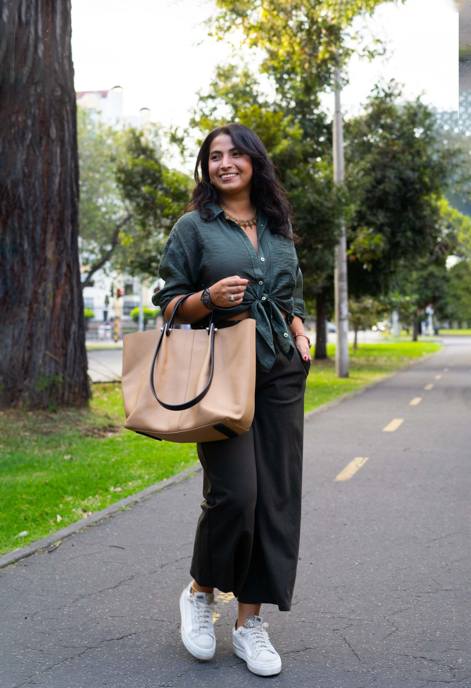
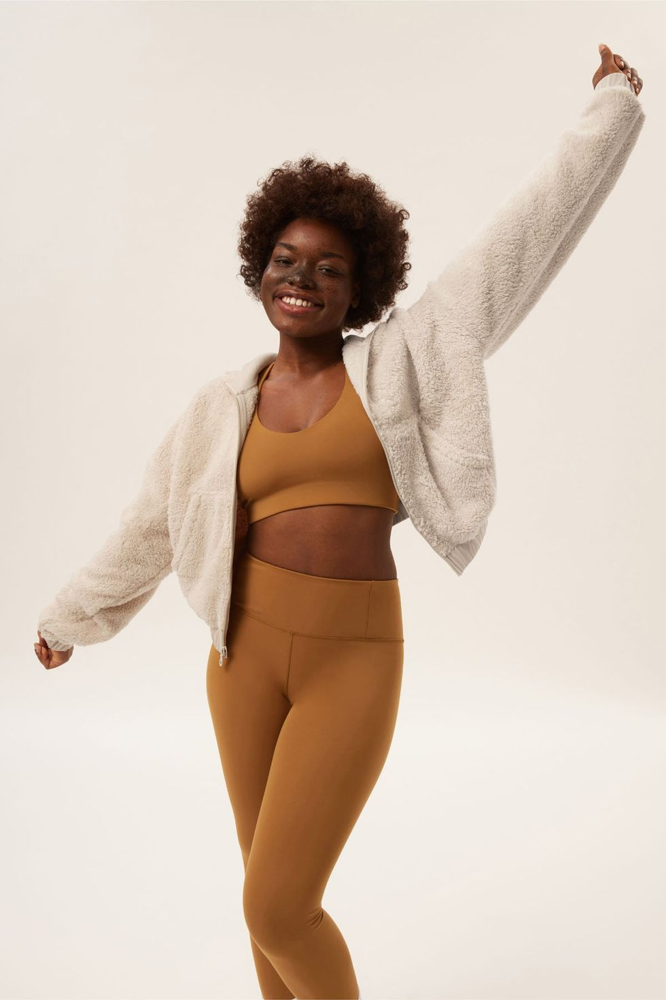
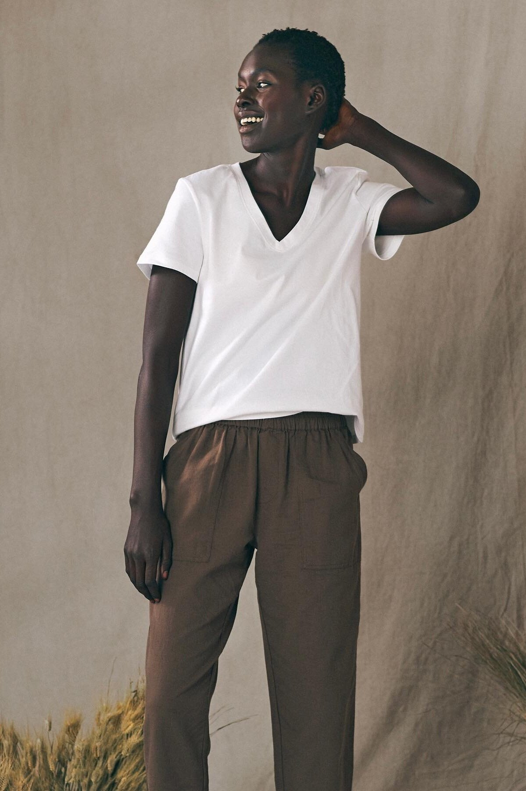
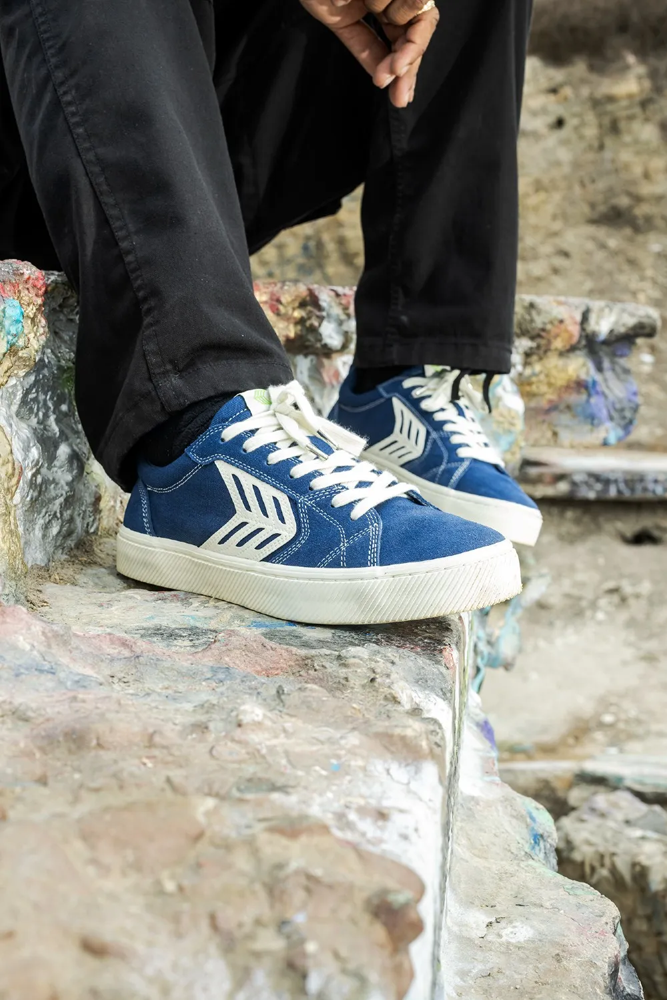

SUSTAINABLE STYLE
SUSTAINABLE BRANDS:
What Makes a Brand Sustainable?
Sustainable brands can embody conscious consumerism and environmental awareness from sourcing materials responsibly to implementing eco-friendly production methods. By prioritizing renewable resources, reducing waste, and advocating for fair labor practices, brands set the standards of ethical fashion and lifestyle choices. Better understand the products you purchase and the planet you live on by supporting businesses dedicated to creating positive change.
Starting a journey towards sustainable shopping involves simple yet impactful steps. Begin by familiarizing yourself with brands renowned for their commitment to ethical and eco-friendly practices. Consider these reccomended brands and align your shopping habits with environmental and ethical considerations while enjoying quality products fit for many different lifestyles and occasions.
Patagonia stands out as a beloved brand in the outdoor community, known primarily for its signature puffy jackets and iconic fleeces. Its commitment to sustainability is something they also take pride in. Patagonia opts for Fair Trade Certified factories, prioritizes sustainably sourced materials for most of its fabrics. Notably, CEO Yvon Chouinard's dedication extends to donating 98% of Patagonia's stock to the Holdfast Collective, a nonprofit focused on addressing climate change.
Eileen Fisher presents an excellent choice for stylish attire, footwear, and accessories. Their website elaborates on the diverse aspects of their sustainability initiatives, highlighting the utilization of organic materials, collaboration with fair and ethical factories, and thorough tracing of their supply chain.
Girlfriend Collective is an excellent choice for activewear, bras, underwear, and select outerwear items. Emphasizing sustainability, the brand employs 100% recyclable packaging and exclusively utilizes eco-friendly materials. Whether crafting garments from recycled water bottles and fishing nets or utilizing fibers derived from waste in the cotton industry, Girlfriend Collective showcases a commitment to environmentally conscious practices.
Paka, a clothing brand that has been garnering attention lately, offers compelling reasons for its popularity. Crafting garments from alpaca wool, renowned for its remarkable softness, natural antimicrobial properties, thermal regulation, lightness, and sustainability, Paka ticks many boxes for sustainable practices. Initiatives contributing to the Peruvian community where its founder found inspiration, and the adoption of compostable packaging, Paka embodies numerous aspects of sustainable fashion that discerning consumers seek.
Organic Basics is reccomended for those seeking essential wardrobe items like shirts, sweaters, underwear, bras, and beyond. The brand places significant emphasis on collaborating with certified factory partners, offering transparency by allowing consumers to examine each factory it partners with. Moreover, Organic Basics exclusively utilizes textiles that are natural, renewable, recycled, biodegradable, and/or low-impact, further highlighting its dedication to sustainable practices.
Cariuma is deeply rooted in sustainability, evident in its various initiatives ranging from eco-friendly materials to combating deforestation. With every purchase of a pair of sneakers, Cariuma pledges to plant two trees in the Brazilian rainforest.

Patagnoia

Eileen Fisher

Girlfriend Collective
Paka

Organic Basics

Cariuma